FlashDeconv：三分钟帮你处理100万个spots
原文：https://mp.weixin.qq.com/s?__biz=MzAwMzIzOTk5OQ==&mid=2247534882&idx=1&sn=e0c50ba497a3c685c0d7828afb8c8fc7&chksm=9b3c3072ac4bb964db5bea44b2d6c56bca951b943a4e54e2a93e7514c001b70090140fb71b3a#rd 合集：空间转录组
一、写在前面
1. FlashDeconv介绍
空间转录组学技术（Spatial Transcriptomics）正在彻底改变我们对组织架构的理解。从Visium到Stereo-seq，从Xenium到Visium HD，这些技术能够在保留空间位置信息的同时测量基因表达。然而，大多数空间转录组平台的测量单元（spot）包含多个细胞，因此需要解卷积（Deconvolution）——从混合的基因表达谱中推断各细胞类型的比例。
FlashDeconv是一个专为图谱规模（atlas-scale）空间转录组数据设计的解卷积框架。它的核心创新在于两点：
· 结构保持的随机投影（Structure-Preserving Sketching） ：利用随机数值线性代数（RandNLA）将约20,000维的基因空间压缩至512维，同时保持细胞类型签名之间的几何关系。
· 杠杆分数替代方差（Leverage Scores vs. Variance） ：用杠杆分数而非方差进行特征加权，从数学上解耦"生物学区分能力"与"细胞丰度"，保护稀有细胞类型的信号。
值得一提的是仅需要32GB内存的CPU计算，无需GPU即可在3min内完成100万个spot的去卷积，也就是说你自己的笔记本就能完成，听说你觉得服务器慢啦，也许是你算法没选对！
论文信息：
Yang, C., Chen, J. & Zhang, X. FlashDeconv enables atlas-scale, multi-resolution spatial deconvolution via structure-preserving sketching. bioRxiv (2025).
论文链接：https://doi.org/10.64898/2025.12.22.696108
代码仓库：https://github.com/cafferychen777/flashdeconv
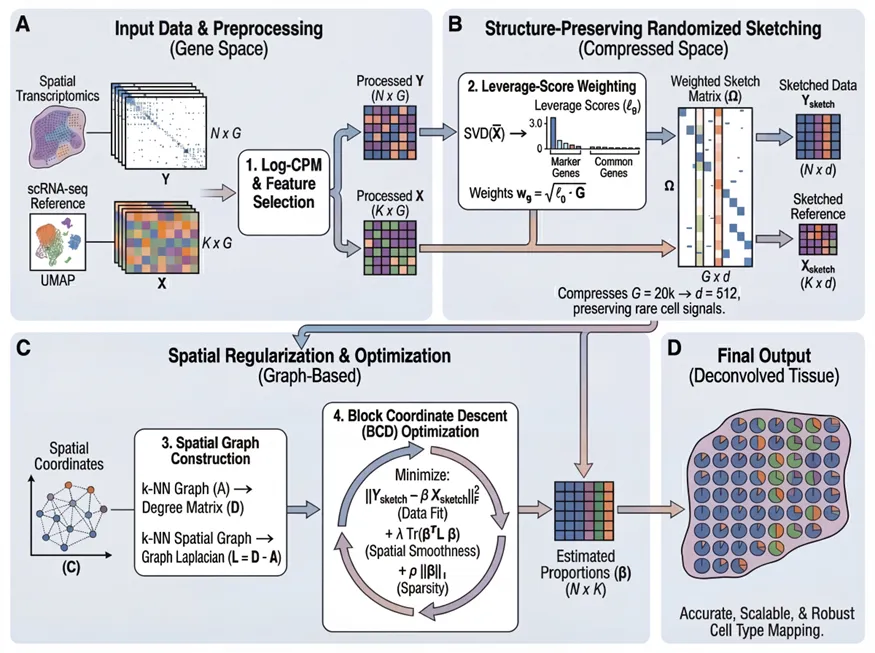
图1. FlashDeconv框架概览。(A) 输入数据预处理：空间转录组数据Y和单细胞参考X经过Log-CPM归一化，基因选择结合HVG和细胞类型标志基因。(B) 结构保持的随机投影：计算杠杆分数识别区分性基因，通过加权sketch矩阵将基因空间从约20,000维压缩至512维。(C) 空间正则化与优化：构建k-NN空间图，通过图拉普拉斯正则化实现空间平滑，使用块坐标下降（BCD）求解。(D) 输出：每个空间位置的细胞类型比例估计。
学前tips:本教程基于Linux环境的jupyter演示，计算资源不足的同学可参考：足够支持你完成硕博生涯的生信环境忘记宣传了，独享用户连技术支持都是独享的RTX5090、4080S、5070显卡上机访问链接：https://biomamba.xiyoucloud.net/欢迎联系客服微信[Biomamba_zhushou]获取帮助
如果需要单细胞数据分析教学、生信热点全文复现 、自测数据个性化分析辅导、常态化实验学习 ，欢迎联系客服微信[Biomamba_zhushou]。
二、背景介绍
2.1 空间转录组解卷积的计算挑战
空间转录组解卷积可以形式化为约束回归问题：给定空间表达矩阵
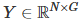
（N个spot，G个基因）和单细胞参考签名矩阵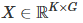
（K个细胞类型），目标是估计比例矩阵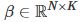
使得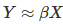
。现有方法面临两个根本性挑战，如下：
挑战一：计算复杂度的平方瓶颈
| 方法 | 建模范式 | 时间复杂度 | 可扩展性 |
|---|---|---|---|
| Cell2Location | 贝叶斯变分推断 | O(N²) | ~20,000 spots后内存溢出 |
| CARD | 条件自回归 | O(N² · K) | 稠密N×N核矩阵 |
| RCTD | 迭代加权最小二乘 | O(N · G · K²) | 11,000 spots需20分钟 |
| FlashDeconv | 结构保持投影 | O(N · k) | 100万spots******~3分钟** |
| Cell2Location等概率方法依赖稠密协方差矩阵的O(N²)操作，在约20,000 spots时即因内存耗尽无法运行。CARD的条件自回归先验需要构建和操作N×N的空间核矩阵。即使是较快的回归方法RCTD，在11,000 spots上也需要约20分钟——线性外推到100万spots将需要超过30小时。 |
挑战二：方差与丰度的耦合
几乎所有现有方法都采用高变异基因（HVG）进行特征选择，其隐含假设是”方差大 = 信息多”。然而，基因表达方差与细胞丰度天然耦合：

高丰度细胞类型（如占30%的肝细胞）贡献高方差，其标志基因被优先选中；而稀有群体（如占0.4%的Tuft细胞、2%的血管内皮细胞）的标志基因方差低，被系统性排除。
这种选择偏差的后果是严重的：肿瘤干细胞（<1%）、血管内皮细胞（定义干细胞微环境的关键群体）、Tuft细胞（肠道的化学感受哨兵）等生物学关键群体被系统性忽略。
2.2 杠杆分数的几何意义
杠杆分数（Leverage Score）来自矩阵SVD分解，其定义为：
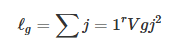
其中 V 是参考矩阵X的右奇异向量（对应基因方向），r 是数值秩。杠杆分数衡量的是每个基因对细胞类型区分结构的几何贡献——与丰度无关。
直观理解：
• 方差衡量一个基因有多"响亮"——被数量主导
• 杠杆分数衡量一个基因有多"独特"——与丰度无关
例如，在肝脏scRNA-seq数据中：
• Rspo3：中央静脉内皮细胞标志基因，该细胞仅占2%，但Rspo3的杠杆分数在所有基因中排名第一（0.0105），因为它定义了一个在转录组空间中独一无二的方向。
• Egfr：肝细胞标志基因，尽管肝细胞丰度高、基因特异性强，但杠杆分数低（0.0007），因为肝细胞与胆管细胞共享代谢基因程序，在几何空间中方向重叠。
2.3 Johnson-Lindenstrauss性质与sketching
随机投影（Random Projection）是一种降维技术，核心是Johnson-Lindenstrauss引理：
对于高维空间中的任意n个点，存在一个投影到O(log n / ε²)维的映射，使得任意两点间的欧氏距离在(1±ε)倍范围内保持。
FlashDeconv使用CountSketch——一种稀疏随机投影：为每个基因随机分配到d个"桶"中的一个，并乘以随机符号±1。这比稠密随机矩阵更高效（O(G)而非O(G·d)），同时满足J-L性质。
关键创新是杠杆分数加权：在进入sketch之前，每个基因按
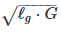
缩放。这使得高杠杆基因（稀有细胞标志物）在哈希碰撞时保持足够的信噪比：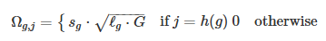
二、主要结果
2.1 杠杆分数成功解耦生物学身份与数量丰度
丰度不变性测试：使用小鼠脑scRNA-seq参考（40,532细胞，59种细胞类型，31,053基因），将少突胶质细胞从26.7%人工降采样至0.4%（67倍减少），追踪其标志基因排名变化。
| 丰度 | 方差排名 | 杠杆分数排名 |
|---|---|---|
| 26.7% | 115 | 150 |
| 10% | 145 | 151 |
| 1% | 200 | 152 |
| 0.4% | 240 | 152 |
方差排名劣化超过100%（115→240），而杠杆分数排名保持稳定（150±2）一 一证明了真正的数学解耦。
基因象限分析：将31,053基因映射到方差-杠杆坐标系（以中位数为阈值划分四象限）：
| 象限 | 定义 | 代表基因 | 特征 |
|---|---|---|---|
| GOLD**** | 低方差、高杠杆 | Cldn5, Rgs5, Ly6a, Abcb1a, Hspb1 | 血管发育通路富集 (p = 2.8×10⁻⁶) |
| NOISE | 高方差、低杠杆 | 35%为Gm系列未注释转录本 | 无显著GO富集 |
GOLD基因富集血管生物学功能（血管发育、内皮细胞分化、血管形成），而NOISE基因零显著GO富集。空间可视化验证：GOLD基因在Visium切片上重建清晰血管结构（空间结构评分1.33），NOISE基因呈随机椒盐噪声（评分0.87，p = 5.6×10⁻⁵）。
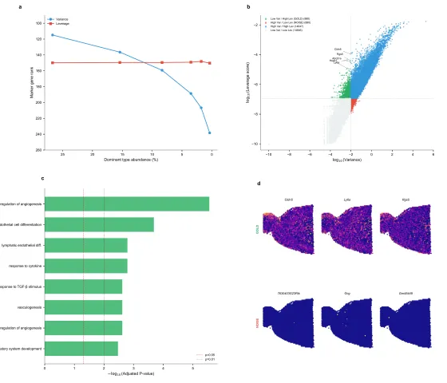
图2. 杠杆分数解耦生物学身份与丰度。(a) 丰度不变性测试：少突胶质细胞降采样时方差排名劣化，杠杆分数排名稳定。(b) 方差-杠杆平面：GOLD象限富含血管标志物，NOISE象限富含未注释转录本。(c) GO富集分析：GOLD基因显著富集血管发育通路。(d) 空间验证：GOLD基因重建血管结构，NOISE基因呈噪声分布。
2.2 基准测试与精度验证
Spotless合成基准（56个数据集，6种组织）
| 指标 | FlashDeconv | Cell2Location | RCTD | NNLS基线 |
|---|---|---|---|---|
| Pearson r | 0.944 | ~0.95 | 0.905 | 0.90 |
| RMSE（中位数） | 0.065 | 0.05-0.08 | 0.06-0.09 | - |
| 稀有细胞AUPR | 0.960±0.036 | 0.95-0.98 | 0.95-0.98 | - |
| 在STARMap金标准数据集（108 spots）上，FlashDeconv在13种方法中排名第1。 |
真实数据案例研究
1. 小鼠肝脏Visium（5,762 spots）
-
JSD = 0.056，排名3/13（仅次于RCTD、Cell2Location）
-
参考稳定性JSD = 0.0138，排名1/13——比RCTD优25%
2. 黑色素瘤Visium（7,557 spots）
-
使用Pearson残差预处理：JSD = 0.015，排名3/13
-
准确捕获稀有T细胞群体（3.3% vs. 真值4.7%）
2.3 线性可扩展性与性能基准
| 数据规模 | 运行时间 | 内存占用 | 硬件 |
|---|---|---|---|
| 10,000 spots | < 1秒 | < 1 GB | MacBook Pro M2 Max |
| 100,000 spots | ~4秒 | ~2 GB | (32GB内存) |
| 351,817 spots (Visium HD 8µm) | 12秒 | ~8 GB | 无需GPU |
| 1,000,000 spots | ~3分钟 | ~21GB | 普通笔记本即可 |
FlashDeconv的线性O(N)复杂度来自两个设计：
1. Sketch空间回归：将G≈20,000基因压缩至d=512维，BCD迭代复杂度O(N·K²)与基因数无关
2. 稀疏图拉普拉斯：k-NN图（k≈6）使空间项复杂度为O(N·k)而非O(N²)
2.4 Visium HD分辨率地平线分析
FlashDeconv的计算效率使得系统性多分辨率分析成为可能——这对于现有方法是不可行的（Cell2Location在约20,000 spots时即无法运行）。
分辨率地平线（Resolution Horizon）
使用Visium HD小鼠小肠数据，在5个分辨率（8, 16, 32, 64, 128µm）进行解卷积：
| 分辨率 | bins数量 | 处理时间 | 单一主导比例 | 混合熵 |
|---|---|---|---|---|
| 8µm | 351,817 | 12秒 | 61.5% | 0.23 |
| 16µm | 13,827 | 0.6秒 | 13.3% | 0.48 |
| 32µm | 3,499 | 0.3秒 | 7.2% | 0.56 |
| 64µm | 882 | 0.2秒 | 5.1% | 0.61 |
| 128µm | 225 | 0.1秒 | 3.9% | 0.65 |
8µm到16µm之间存在一个急剧的信息损失转变 ：单一细胞类型主导的bin比例从61.5%骤降至13.3%（降低78%）。这一转变与肠上皮细胞的典型直径（10-15µm）一致——当测量单元超过单细胞尺度时，细胞身份信息不可避免地被空间平均所稀释。
相关性符号翻转：空间聚合诱导虚假共定位
Paneth细胞和Goblet细胞都是分泌型上皮细胞，但占据不同空间生态位：
• Paneth细胞：专门位于隐窝底部
• Goblet细胞：沿隐窝-绒毛轴分布
| 分辨率 | Paneth-Goblet相关性 | 解释 |
|---|---|---|
| 8µm | r = -0.12 (p < 10⁻¹⁰⁰) | 真实：空间互斥 |
| 16µm | r = +0.15 | 开始混合 |
| 32µm | r = +0.45 | 虚假共定位 |
| 64µm | r = +0.80 | 严重失真 |
相关性从负变正 是质的信息损失。在传统Visium分辨率（55µm）分析数据的研究者会观察到强共定位，可能错误地推断Paneth和Goblet细胞共享微环境或响应相似空间信号。
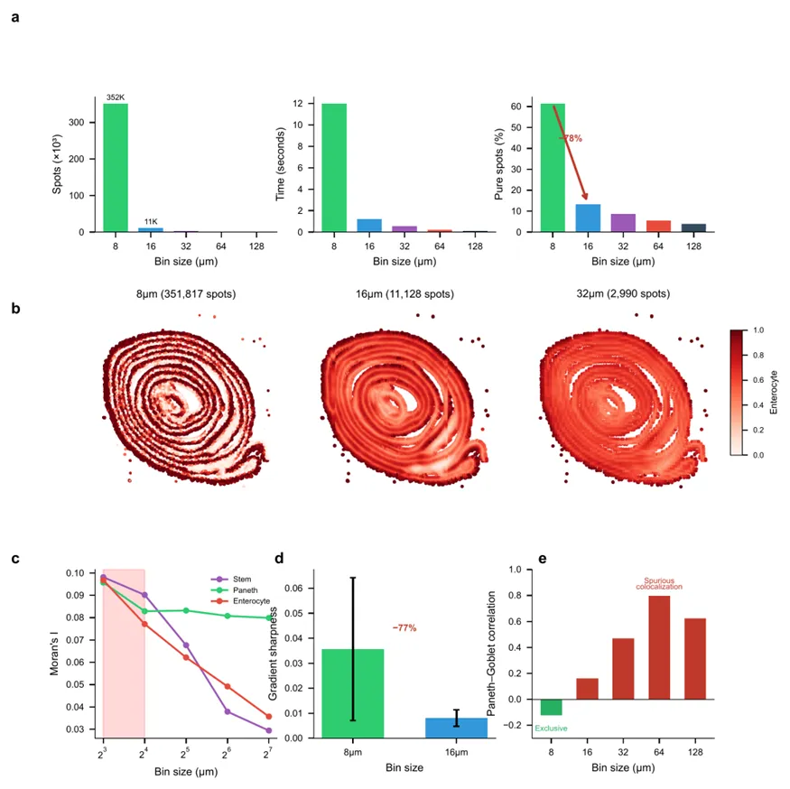
图3. Visium HD多分辨率分析揭示分辨率依赖的信息损失。(a) FlashDeconv在不同分辨率下的性能。(b) 肠上皮细胞比例在8, 16, 32µm的空间分布——精细解剖结构逐渐模糊。(c) 不同细胞类型的分辨率敏感性：干细胞（红）显示最陡的空间相干性下降，Paneth细胞（蓝）保持空间结构。(d) 隐窝-绒毛边界验证。(e) Paneth-Goblet相关性符号翻转。
2.5 Tuft细胞化学感受微环境的发现
Tuft 细胞是肠上皮中稀有的化学感受细胞（仅占0.4-2%），在所有细胞类型中展现最高的HVG盲区：其标志基因在方差选择下比杠杆分数选择平均低21个百分位——最易被标准特征选择流程丢弃。
8µm分辨率下的发现：
FlashDeconv识别出2,244个Tuft细胞微环境，最高比例达61%（近纯Tuft spot）。
共定位分析（置换检验，n = 10,000，p < 10⁻⁴）：
| 共定位细胞类型 | 富集倍数 | 解释 |
|---|---|---|
| 肠道干细胞 | 16.8× | Tuft-Stem微环境 |
| 肠内分泌细胞 | 15.3× | 化学感受生态位 |
| 肠上皮细胞 | 0.11× (缺失) | 空间互斥 |
| 杯状细胞 | 0.10× (缺失) | 空间互斥 |
| Paneth细胞 | 0.22× (缺失) | 空间分离 |
Tuft细胞与干细胞的密切空间邻近性与其已知的隐窝底部定位一致，也与最近发现的Tuft细胞在上皮损伤后可作为储备干细胞的功能相吻合（Huang et al., 2024）。
分辨率依赖性：
• 8µm：最高Tuft比例61%
• 128µm：最高Tuft比例4%——微环境不可检测
这一发现展示了FlashDeconv揭示双重遮蔽生物学结构的能力：在特征空间被低方差遮蔽（HVG丢弃），在物理空间被粗分辨率稀释。
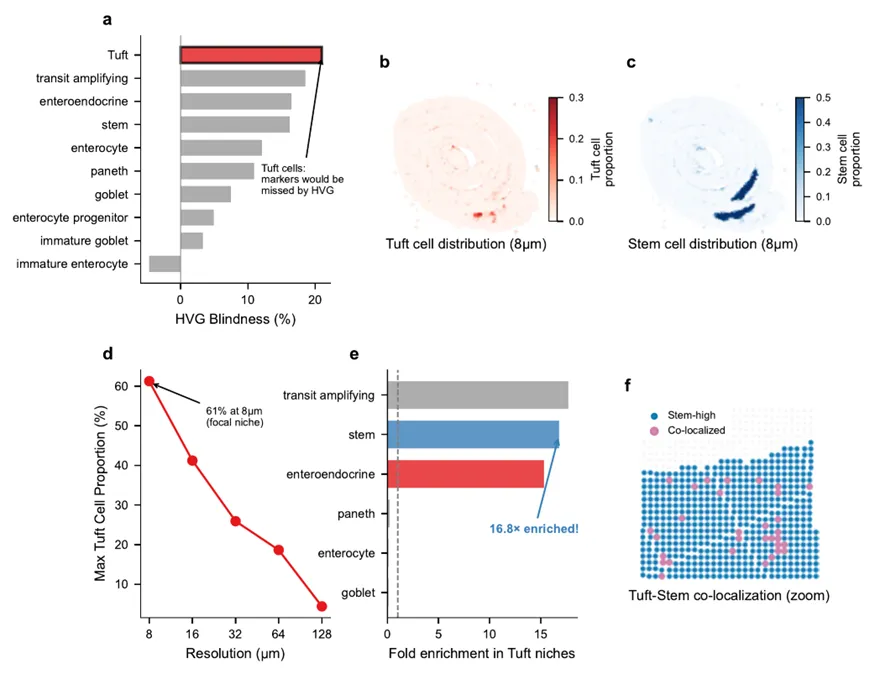
图4. FlashDeconv揭示隐秘的Tuft-Stem化学感受微环境。(a) HVG盲区排名：Tuft细胞最高（21百分位）。(b) 8µm分辨率下Tuft细胞空间分布。(c) 干细胞空间分布（隐窝底部富集）。(d) Tuft检测的分辨率依赖性。(e) 共定位分析：Tuft微环境显著富集干细胞和肠内分泌细胞。(f) Tuft-Stem共定位的空间放大图。
三、小结
FlashDeconv通过三个核心设计解决图谱规模空间转录组解卷积的根本挑战：
| 设计 | 解决的问题 | 技术实现 |
|---|---|---|
| Log-CPM + 杠杆分数加权 | 稀有细胞信号丢失 | 解耦生物学区分能力与丰度 |
| CountSketch随机投影 | 计算复杂度瓶颈 | G维→512维，满足J-L性质 |
| 稀疏图拉普拉斯 | 空间正则化O(N²) | k-NN图，O(N·k)复杂度 |
性能总结：
-
****•速度 ：100万spots约3分钟，线性O(N)复杂度
-
• 硬件 ：无需GPU，32GB内存笔记本即可
-
• 精度 ：Pearson 0.944，与贝叶斯方法相当
-
• 稀有细胞 ：杠杆分数保留0.4%的Tuft细胞信号
-
• 稳定性 ：参考协议敏感性排名第1
四、 FlashDeconv 实操
如果你对下面的教程比较迷茫，那么你可以先行学习编程教程：十小时学会Linux生信Linux及服务器使用技巧生信Python速查手册
4.1 安装
-
-
-
-
-
-
-
-
- *
-
-
-
-
-
-
-
# 从PyPI安装（推荐）pip install flashdeconv# 如需scanpy/anndata集成pip install flashdeconv[io]# 从源码安装（开发版）git clone https://github.com/cafferychen777/flashdeconv.gitcd flashdeconvpip install -e ".[dev]"环境要求：Python ≥ 3.9, numpy, scipy, numba。可选：scanpy, anndata。
4.2 快速开始
-
-
-
-
-
-
-
-
-
-
- *
-
-
-
-
-
-
-
-
-
import scanpy as scimport flashdeconv as fd# 读取数据adata_st = sc.read_h5ad("spatial.h5ad") # 空间转录组数据adata_ref = sc.read_h5ad("reference.h5ad") # 单细胞参考# 解卷积（一行完成）fd.tl.deconvolve(adata_st, adata_ref, cell_type_key="cell_type")# 查看结果print(adata_st.obsm["flashdeconv"]) # 细胞类型比例 DataFrame (n_spots, n_types)print(adata_st.obs["flashdeconv_dominant"]) # 主导细胞类型 (categorical)# 可视化sc.pl.spatial(adata_st, color="flashdeconv_Hepatocyte")
4.3 参数调优指南
lambda_spatial（空间正则化强度） 是最重要的调节参数。其物理意义：spot越小、UMI越稀疏，单个spot的信号越不可靠，越需要借助邻居信息进行平滑。
| 平台 | Spot大小 | 典型UMI/Spot | 推荐lambda_spatial |
|---|---|---|---|
| Visium | 55µm | 10,000–30,000 | 1,000–10,000 |
| Visium HD 16µm | 16µm | 200–2,000 | 5,000–20,000 |
| Visium HD 8µm | 8µm | 50–500 | 10,000–50,000 |
| Visium HD 2µm | 2µm | 1–10 | 50,000–100,000 |
| Stereo-seq | 0.5–1µm | 5–50 | 50,000–200,000 |
判断标准：
• 结果呈"椒盐噪声" → 增大lambda_spatial
• 结果过于模糊 → 减小lambda_spatial
• 不确定时使用lambda_spatial="auto"进行自动调节
4.4 完整示例：Visium HD肠道数据解卷积